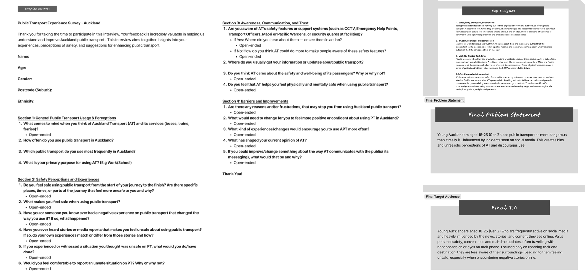
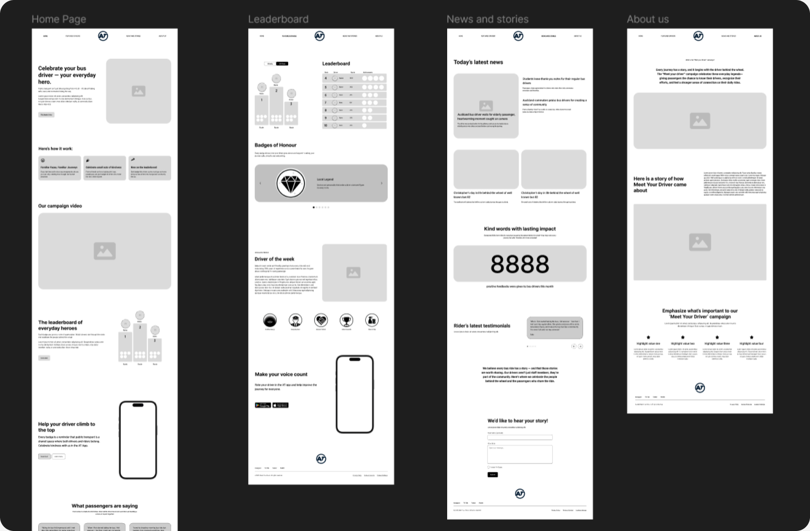
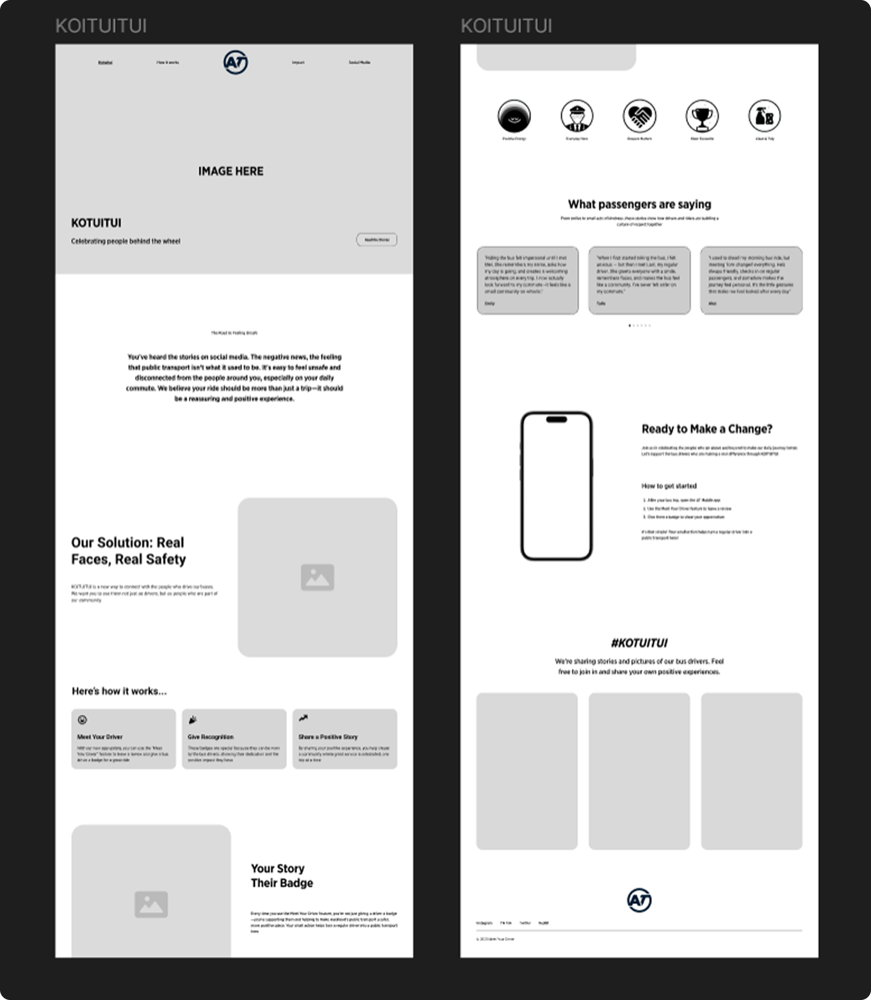
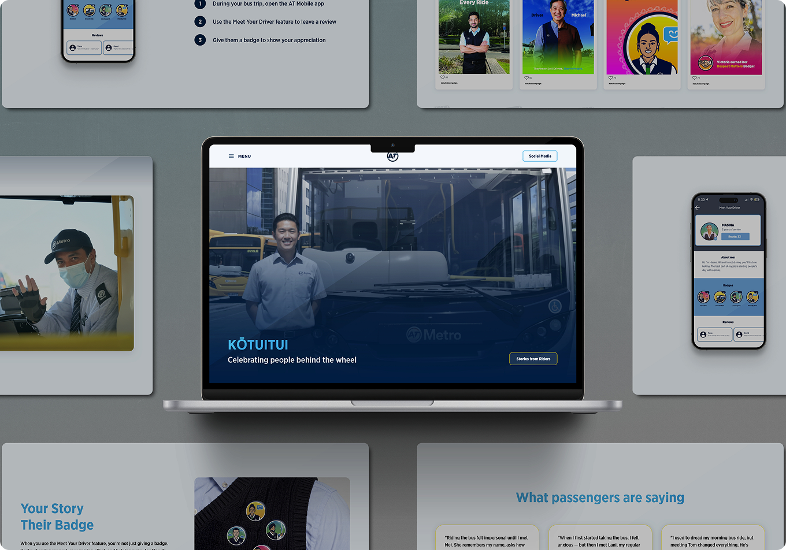

Kōtuitui
by Theo Lawry*
Research Phase
To kick things off, the first approach was to interview people around and gather their thoughts on Auckland Transport. Here's what I found:

Web Prototyping
In order for the people to know about the whole strategy, I started my lo-fi by compiling all the bits of information, that can potentially be shown a part of our campaign

Refinement
After user feedback and small changes to the campaign, it was clear that some things had to be sacrificed for better engagement and user retemtion. That left me with one-pager campaign web

Final Outcome
Visit Web
Credit
Shout out to the team for their dedication to this project. Working alongside Auckland Transport was a fantastic experience, and I'm proud to see our collective vision come to life.
Clients
Auckland Transport
Fonts
Gotham Narrow
Technology
Languages
HTML
CSS
JavaScript
Timeline
8 Weeks
Project Role
UX/UI Designer
Producer